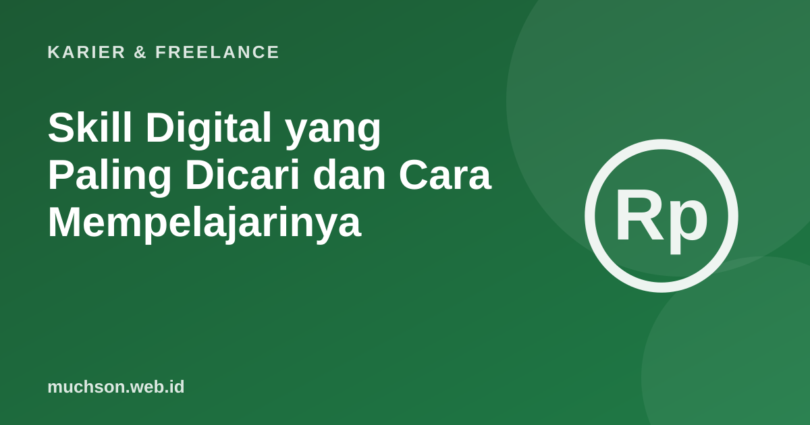

Beranda › Artikel › Karier & Freelance
Karier & FreelanceSkill Digital yang Paling Dicari dan Cara Mempelajarinya
Dunia kerja berubah cepat. Menurut Future of Jobs Report 2025 dari World Economic Forum, pemberi kerja memperkirakan 39% keterampilan inti pekerja akan berubah pada 2030. Artikel ini merangkum keterampilan yang paling cepat tumbuh dan cara mempelajarinya tanpa harus berhenti bekerja.

Yang dikatakan Future of Jobs Report 2025
Laporan WEF 2025 disusun dari survei lebih dari 1.000 pemberi kerja besar di 55 negara. Tiga keterampilan dengan pertumbuhan tercepat adalah:
Perhatikan bahwa keterampilan manusiawi seperti berpikir kreatif, ketangguhan, dan rasa ingin tahu juga termasuk yang paling meningkat kebutuhannya. Skill digital paling bernilai bila dipadukan dengan kemampuan ini.
Skill digital untuk berbagai profesi
| Profesi | Skill digital yang berdampak besar |
|---|---|
| Administrasi dan keuangan | Spreadsheet lanjutan, otomasi sederhana, visualisasi data |
| Pemasaran dan penjualan | Analitik digital, iklan digital, CRM, memakai AI untuk konten |
| Guru dan pelatih | Desain pembelajaran digital, AI untuk materi, aksesibilitas |
| Kesehatan | Sistem informasi kesehatan, keamanan data pasien |
| UMKM | Toko daring, pembayaran digital, pencatatan keuangan digital, konten media sosial |
| IT | Cloud, keamanan siber, data, AI engineering |
Pilih skill pertama Anda
Rencana belajar 90 hari
Proyek nyata di tempat kerja adalah bukti terbaik. "Saya mengotomatiskan laporan mingguan sehingga hemat 3 jam" jauh lebih meyakinkan daripada sertifikat saja.
Tanya jawab
Skill apa yang paling dicari ke depan?
Apakah harus kuliah lagi untuk upskilling?
Berapa lama menguasai skill digital baru?
Skill non-teknis apa yang penting?
Sumber dan bacaan lanjut
- World Economic Forum: The Future of Jobs Report 2025
- Belajar AI dari nol (artikel terkait)
- Apakah AI akan menggantikan pekerjaan saya (artikel terkait)